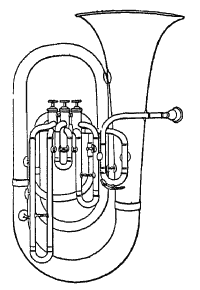

튜바(tuba)는 금관악기로서 밸브를 가졌다. 튜바라는 호칭은 매우 애매하게 쓰이고 있으며, 종류도 또한 많다. 즉 튜바라는 것은 오케스트라나 취주악에서 가장 낮은음넓이를 담당하는 금관악기로서 밸브에 의한 변음장치를 가진 것의 총칭이다. 역사는 짧으며 1820년대 독일에서 금관악기를 위한 밸브장치가 발명된 직후 낮은음의 호른으로 제작된 것이 맨 처음이므로 트럼펫과 호른같이 밸브가 없는 전신(前身) 악기는 존재하지 않는다. 가장 대표적인 것은 고음역용에서부터 차례로 작은베이스·가온베이스·큰베이스라고도 한다. 마우스피스는 트럼펫을 닮아 굽었고 호른같이 깊은 캡 모양이다. 금관악기 중 관의 길이에 대한 단면적인 비율이 가장 큰 관을 가졌고, 관은 거대한 벨을 향해 원추형이다. 이러한 구조로 인해 음빛깔은 부드럽고 또한 저배음의 취주는 다른 것에 비하여 보다 쉽다. 밸브는 기본적으로는 3개가 있으나, 보다 낮은음의 취주를 가능케 하기 위하여 4-6개의 밸브를 가진 것도 있다. 그리고 우포늄과 비슷한 형태이다
